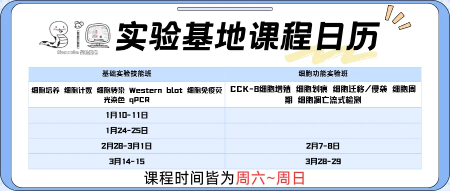
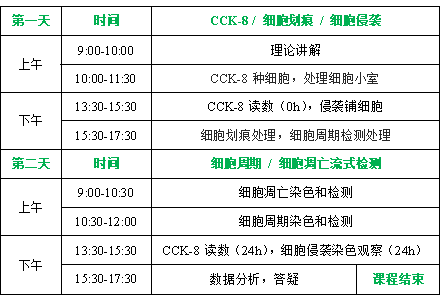

手把手教你做湿式验
原文：https://mp.weixin.qq.com/s?__biz=MzAwMzIzOTk5OQ==&mid=2247533677&idx=2&sn=3299a7e1cdc1f444aa8d445ecf0ce84c&chksm=9b3c3d3dac4bb42b67aa009d986426567f642921e1b3334e92d6a7602d8feeb4867828a80c64#rd 合集：实验基地

秋季已过，经过一学期的学习，越来越多的同学通过客服微信[Biomamba_yunying]表示希望推出一款兼顾实验操作基础知识和细胞功能学习的课程的愿望。为此，实验基地基于大家最基本的实验需求，推出了组合实验技能班，涵盖细胞培养、WB（蛋白质印迹）、qPCR（实时荧光定量PCR）以及流式细胞凋亡检测内容。
学习时间如下：

具体课程内容

基础实验班：
内容：细胞培养细胞计数细胞转染Western blot细胞免疫荧光染色 qPCR
价格：2880元/人（实操）

细胞功能实验班：
内容：CCK-8细胞增殖 细胞划痕 细胞迁移/侵袭 细胞周期 细胞凋亡流式检测
价格：3180元/人（实操）

实验基地
长期以来Biomamba都在自己的媒体矩阵中分享生信分析技能。长期以来Biomamba都在自己的媒体矩阵中分享生信分析技能。生命科学毕竟是物质的科学，脱离了实验 总是玩不转的，大家的分析结果也需要去实验验证。一方面自己想在不同的领域里开疆扩土，追寻些新的可能；另一方面也想为大家的科研生涯全方面保驾护航，未来给大家提供新的服务、交流交流实验技能。所以，Biomamba联合浙江大学博士、同济大学博士后团队 组建了一个自己的实验室(Biomamba生信基地终于有基地 啦！)，大家有什么想法可以填写问卷 跟咱反馈反馈：
问卷链接：https://www.wjx.cn/vm/tpYsP8D.aspx# 问卷二维码： 更多想法也可以直接添加我们的客服微信[Biomamba_yunying]聊聊，我们也有专门的实验基地交流群。
更多想法也可以直接添加我们的客服微信[Biomamba_yunying]聊聊，我们也有专门的实验基地交流群。

全新实验基地一览


经过精心筹备，实验基地的全新实验室正式落址上海南翔古镇(总占地200㎡，尽情发挥)，现对外开放！全新的场地，全新的配套！实验基地场地配套：独立的办公场地、二级生物实验室(细胞房、分子实验室)

实验基地仪器配套：生物安全柜，倒置荧光显微镜；高速冷冻离心机；qPCR仪；普通PCR仪；化学发光成像系统；酶标仪；紫外分光光度计；蛋白电泳设备，核酸电泳设备；半干转仪；单细胞仪。其他大型设备正逐步进场，小伙伴们有想要的仪器也可以留言或私信我们。
实验场地与仪器一应俱全：

 细胞房与超净台也替大家试运行过啦：
细胞房与超净台也替大家试运行过啦： 实验基地斥巨资引进的流式细胞仪到了！
实验基地斥巨资引进的流式细胞仪到了！ 我们还开设有实验基地交流群，欢迎大家入群讨论
我们还开设有实验基地交流群，欢迎大家入群讨论
已有生信基地联系方式的同学无需重复添加


如何联系我们

 留一个领取资料、开箱即用的单细胞分析镜像的微信号[Biomamba_yunying]，方便各位随时交流。同时我们也构建了交流群矩阵，欢迎大家入群讨论。
大家可以阅读完这几篇之后添加给生信入门初学者的小贴士
没有检索，就没有发言权
留一个领取资料、开箱即用的单细胞分析镜像的微信号[Biomamba_yunying]，方便各位随时交流。同时我们也构建了交流群矩阵，欢迎大家入群讨论。
大家可以阅读完这几篇之后添加给生信入门初学者的小贴士
没有检索，就没有发言权
已有生信基地联系方式的同学无需重复添加
 您点的每个赞和在看，我都认真当成了喜欢
您点的每个赞和在看，我都认真当成了喜欢